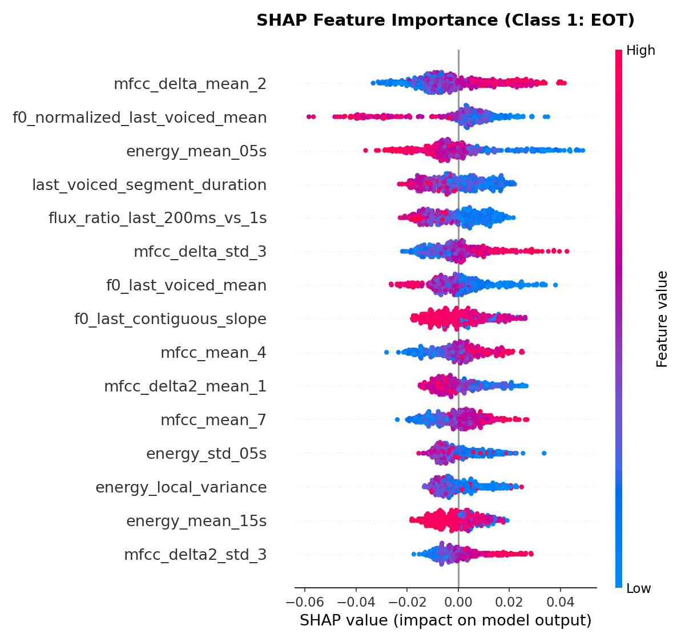
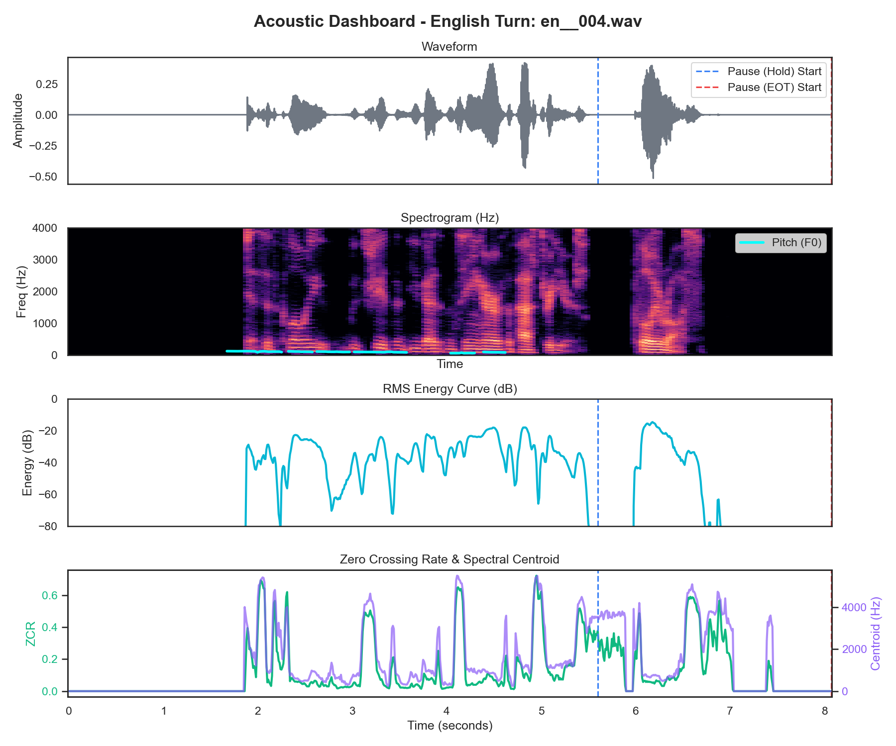
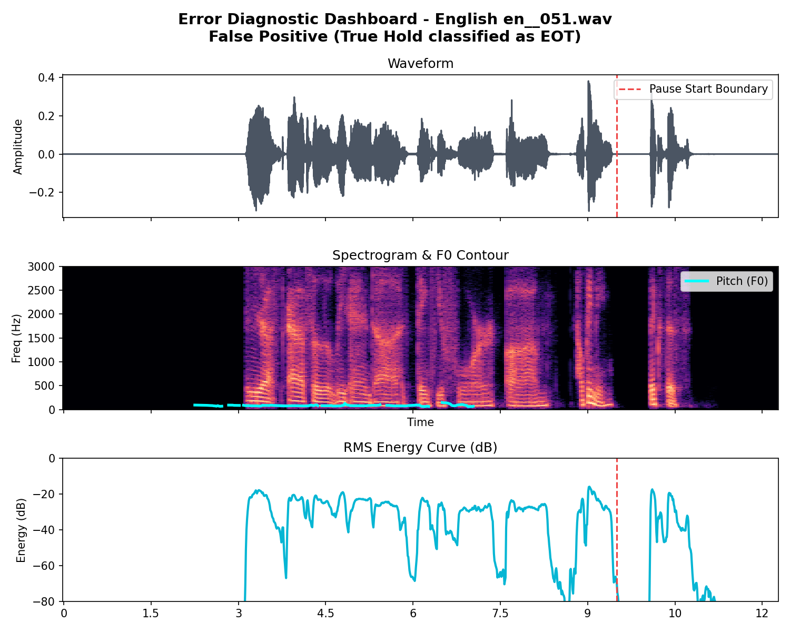
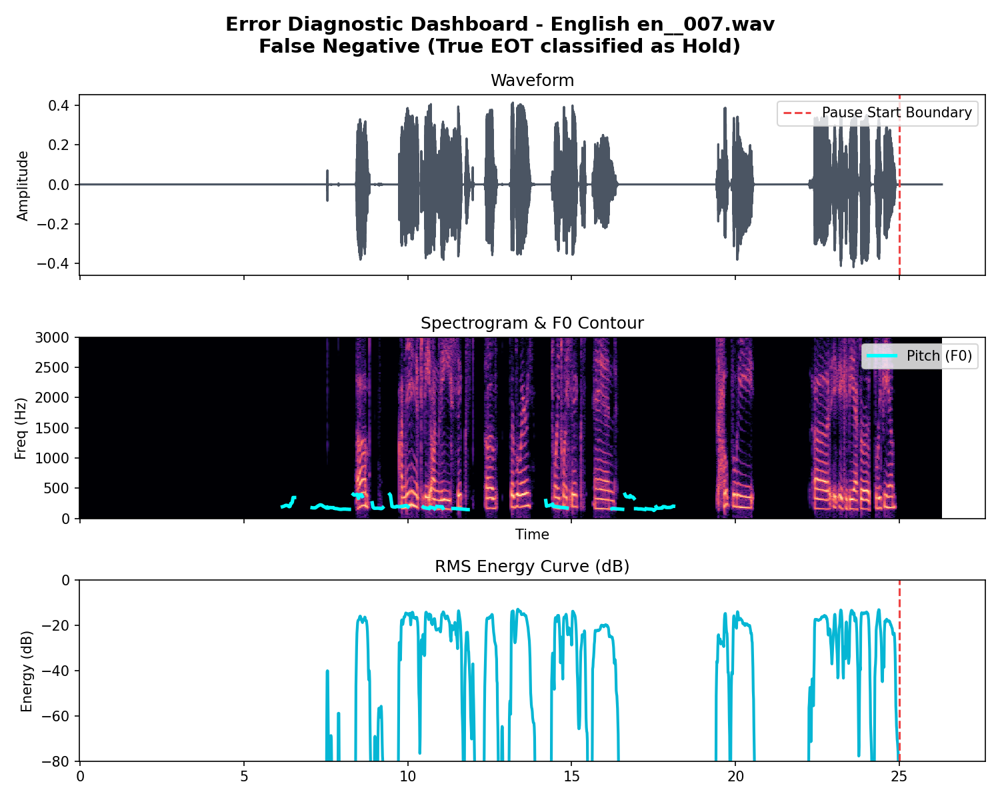

Optimized Voice Agent Floor Control utilizing Causal Acoustic RBF SVM models
In conversational voice interfaces, detecting sentence completion (End-of-Turn) accurately is critical. An agent that responds too early interrupts the user (false cutoff), while responding too late leads to uncomfortable conversational delays.
This project builds a robust machine learning model adhering to the **Causality Constraint** (using only audio preceding the pause) to predict whether the speaker intends to resume speaking (Hold) or has finished (EOT).
| Dataset | Metric | Baseline (Silence-Only) | Optimized Model (SVC) | Improvement |
|---|---|---|---|---|
| English | Mean Delay | 1600 ms | 430 ms | -1170 ms (73%) |
| Hindi | Mean Delay | 850 ms | 265 ms | -585 ms (69%) |
| Overall Combined | Mean Delay | 1225 ms | 348 ms | -877 ms (71%) |
We engineered 130 features and applied Random Forest importances to select the top 80 features:
The SHAP summary plot confirms that pitch stability and local pitch means are the primary drivers in separating holds from EOT transitions.
False Positives (Holds predicted as EOT): Occur when speakers drop their energy/volume pre-pause (fade-out) while intending to continue.
False Negatives (EOT predicted as Hold): Occur when speakers keep their pitch elevated and terminate their turn abruptly without fading out.

SHAP Feature Importances

English Acoustic Dashboard (en__004.wav)

Top FP Case (en__051.wav)

Top FN Case (en__007.wav)
Model: StandardScaler → SVC (RBF kernel)
Hyperparameters: C=1.0, class_weight='balanced'
Joint training: Combining English and Hindi.
Human Contributions:
AI Contributions (Antigravity):